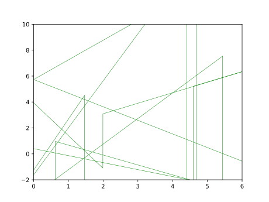
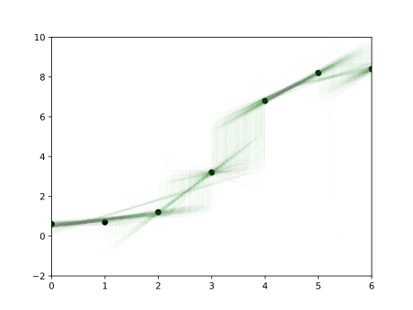

We discuss Bayesian linear regression
and piecewise linear
regression. Our piecewise linear regression uses an infinite Poisson
process as the set of change points. The laziness of Haskell effectively
truncates the infinite process as needed. The examples also demonstrate
that higher-order functions (such as regress and
splice) are very useful.
module RegressionDemo where
import LazyPPL
import Distr
import Data.Colour
import Data.Colour.Names
import Control.Monad
import Graphics.Matplotlib hiding (density)Regression is about finding a fitting function to some data. Bayesian regression is about finding a posterior distribution on functions, given the data.
We start with a random linear function:
linear :: Prob (Double -> Double)
linear =
do
a <- normal 0 3
b <- normal 0 3
let f = \x -> a * x + b
return fplotLinearPrior =
do
fs' <- mh 1 (sample linear)
let fs = map fst $ take 1000 $ fs'
plotFuns "images/regression-linear-prior.svg" [] fs 0.1dataset :: [(Double, Double)]
dataset = [(0,0.6), (1, 0.7), (2,1.2), (3,3.2), (4,6.8), (5, 8.2), (6,8.4)]plotDataset =
do
plotFuns "images/regression-dataset.svg" dataset [] 0.1Our regression here is noisy: the function has not precisely generated this data set, because the points are not colinear.
Our generic regression function takes a random functionprior, and some input/output observations
dataset, which are assumed to be noisy according to
sigma, returns a conditioned random linear function
(unnormalized).
regress :: Double -> Prob (a -> Double) -> [(a, Double)] -> Meas (a -> Double)
regress sigma prior dataset =
do
f <- sample prior
forM_ dataset (\(x, y) -> score $ normalPdf (f x) sigma y)
return fplotLinReg =
do fs' <- mh 0.5 (regress 0.5 linear dataset)
let fs = map fst $ take 1000 $ every 50 $ drop 100 fs'
plotFuns "images/regression-linear-reg.svg" dataset fs 0.01
splice which splices together different draws from a random
function at a random selection of change points. NB if the point process
is infinite then the resulting function has an infinite number of
pieces, but this is all done lazily, so it’s not a problem.
splice :: Prob [Double] -> Prob (Double -> Double) -> Prob (Double -> Double)
splice pointProcess randomFun =
do
xs <- pointProcess
fs <- mapM (const randomFun) xs
default_f <- randomFun
let h :: [(Double, Double -> Double)] -> Double -> Double
h [] x = default_f x
h ((a, f) : xfs) x | x <= a = f x
h ((a, f) : xfs) x | x > a = h xfs x
return (h (zip xs fs))linear, and for a point process we will use the following
Poisson point process, poissonPP. This generates an
infinite random list of points, where the gaps between them are
exponentially distributed.
poissonPP :: Double -> Double -> Prob [Double]
poissonPP lower rate =
do
step <- exponential rate
let x = lower + step
xs <- poissonPP x rate
return (x : xs)plotPoissonPP =
do
pws <- mh 1 $ sample $ poissonPP 0 0.1
let ps = map (takeWhile (20>)) $ map fst $ take 5 $ pws
let filename = "images/regression-poissonpp.svg"
putStrLn $ "Plotting " ++ filename ++ "..."
let myscatter mpl i = mpl % setSubplot i % scatter (ps !! i) (map (const (0::Double)) (ps !! i)) @@ [o2 "s" (10::Int),o2 "c" "black"] % xlim (0::Int) (20::Int) % ylim (-1 :: Int) (1::Int) % mp # "ax.yaxis.set_major_formatter(mticker.NullFormatter())"
let myscatteraxes mpl i = if i < (length ps - 1) then myscatter mpl i % mp # "ax.xaxis.set_major_formatter(mticker.NullFormatter())" else myscatter mpl i
file filename $ foldl myscatteraxes (subplots @@ [o2 "nrows" (length ps),o2 "ncols" (1::Int)]) [0..(length ps - 1)]
putStrLn $ "Done."We can now invoke a random piecewise linear function by calling splice (poissonPP 0 0.1) linear.
Here are ten draws from this distribution. Because the viewport is
bounded, laziness takes care of truncations to the point process that we
passed to splice.

plotPiecewisePrior =
do
fs' <- mh 1 $ sample $ splice (poissonPP 0 0.1) linear
let fs = map fst $ take 10 $ fs'
plotFuns "images/regression-piecewise-prior.svg" [] fs 1regress 0.1 (splice (poissonPP 0 0.1) linear).
We can then sample from the unnormalized distribution using
Metropolis-Hastings.
plotPiecewiseReg =
do
fs' <- mhirreducible 0.2 0.1 (regress 0.1 (splice (poissonPP 0 0.1) linear) dataset)
let fs = map fst $ take 1000 $ every 1000 $ drop 10000 fs'
plotFuns "images/regression-piecewise-reg.svg" dataset fs 0.01
Finally, we can also do our regression using piecewise constant functions. Our prior will now berandConst, a random linear function
with slope 0.
randConst :: Prob (Double -> Double)
randConst =
do
b <- normal 0 3
let f = \x -> b
return fsplice (poissonPP 0 0.1) randConst
and perform inference on it to get the resultant unnormalized
distribution of piecewise constant functions.
plotPiecewiseConst =
do
fs' <- mhirreducible 0.2 0.1 (regress 0.1 (splice (poissonPP 0 0.1) randConst) dataset)
let fs = map fst $ take 1000 $ every 1000 $ drop 10000 fs'
plotFuns "images/regression-piecewise-const.svg" dataset fs 0.01
-- Plot the points drawn from weighted samples
-- epsilon: smallest y axis difference to worry about
-- delta: smallest x axis difference to worry about
interestingPoints :: (Double -> Double) -> Double -> Double -> Double -> Double -> [Double] -> [Double]
interestingPoints f lower upper epsilon delta acc =
if abs(upper - lower) < delta then acc
else
let mid = (upper - lower) / 2 + lower in
if abs((f(upper) - f(lower)) / 2 + f(lower) - f(mid)) < epsilon
then acc
else interestingPoints f lower mid epsilon delta (mid : (interestingPoints f mid upper epsilon delta acc))
sampleFun f =
-- [ (x, f x) | x <- [(-0.25),(-0.25+0.1)..6.2]]
let xs = ((-0.25) : (interestingPoints f (-0.25) 6.2 0.3 0.001 [6.2])) in
map (\x -> (x,f x)) xs
plotFuns :: String -> [(Double,Double)] -> [Double -> Double] -> Double -> IO ()
plotFuns filename dataset funs alpha =
do putStrLn $ "Plotting " ++ filename ++ "..."
file filename $ foldl (\a f -> let xfs = sampleFun f in a % plot (map fst xfs) (map snd xfs) @@ [o1 "go-", o2 "linewidth" (0.5 :: Double), o2 "alpha" alpha, o2 "ms" (0 :: Int)]) (scatter (map fst dataset) (map snd dataset) @@ [o2 "c" "black"] % xlim (0 :: Int) (6 :: Int) % ylim (-2 :: Int) (10 :: Int)) funs
putStrLn "Done."
return ()
main :: IO ()
main = do {plotLinearPrior ; plotDataset ; plotLinReg ; plotPiecewisePrior ; plotPoissonPP ; plotPiecewiseReg ; plotPiecewiseConst }